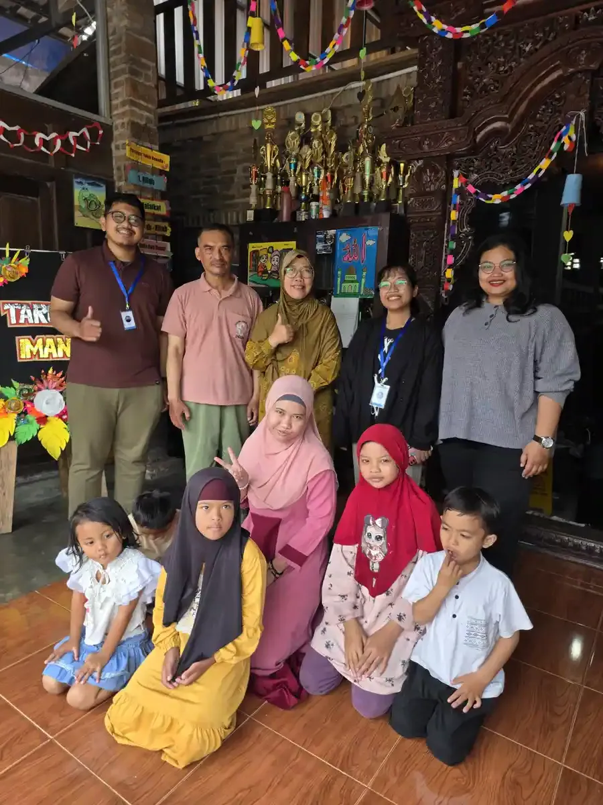
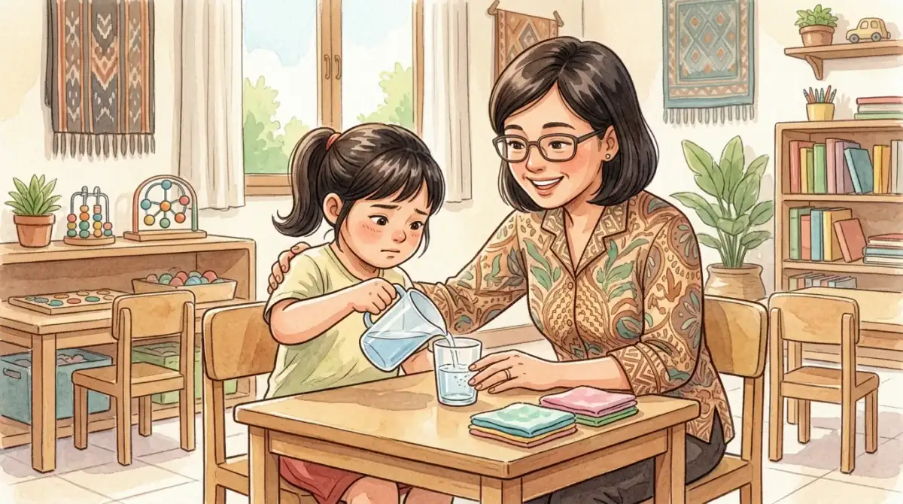

Tunagrahita adalah istilah yang digunakan untuk menyebut kondisi disabilitas intelektual pada seseorang. Dalam dunia pendidikan khusus di Indonesia, istilah ini merujuk pada individu yang memiliki fungsi kecerdasan di bawah rata-rata dan disertai keterbatasan dalam perilaku adaptif. Meskipun anak tunagrahita menghadapi tantangan dalam belajar akademik, mereka tetap memiliki potensi yang dapat dikembangkan melalui pendekatan pendidikan yang tepat.
Di Yayasan Ukhuwah Kaffah Amanatullah (YUKA), kami mendampingi anak-anak berkebutuhan khusus setiap hari melalui Sekolah Inklusi Taruna Imani di Sleman, Yogyakarta. Dari pengalaman bertahun-tahun menangani berbagai jenis anak berkebutuhan khusus (ABK), termasuk anak tunagrahita, kami melihat langsung bahwa pendampingan yang konsisten dan penuh kasih sayang mampu membawa perubahan besar. Artikel ini kami susun berdasarkan pengalaman di lapangan, dikombinasikan dengan landasan ilmiah yang relevan.
Dalam Islam, setiap anak adalah amanah dari Allah SWT. Rasulullah SAW bersabda: "Setiap anak dilahirkan dalam keadaan fitrah." (HR. Bukhari-Muslim). Anak tunagrahita pun memiliki fitrah yang sama. Merawat, mendidik, dan mencintai mereka adalah ibadah yang sangat mulia di sisi Allah.
Daftar Isi
Pengertian Tunagrahita Menurut Para Ahli
Tunagrahita adalah kondisi di mana seseorang memiliki fungsi intelektual yang secara signifikan berada di bawah rata-rata, dengan skor IQ di bawah 70. Kondisi ini disertai dengan keterbatasan dalam dua atau lebih area perilaku adaptif, seperti komunikasi, merawat diri, keterampilan sosial, dan kemampuan akademik fungsional. Menurut definisi yang berlaku, kondisi ini harus muncul sebelum usia 18 tahun.
Istilah "tunagrahita" berasal dari bahasa Sansekerta. "Tuna" berarti rugi atau kurang, sedangkan "grahita" berarti pikiran. Secara harfiah, tunagrahita berarti kurang dalam kemampuan berpikir. Dalam literatur internasional, kondisi ini dikenal sebagai intellectual disability (disabilitas intelektual). Istilah lama seperti "retardasi mental" kini sudah tidak digunakan karena dianggap mengandung stigma negatif.
Beberapa definisi tunagrahita menurut para ahli dan lembaga resmi:
- AAIDD (American Association on Intellectual and Developmental Disabilities): Tunagrahita adalah disabilitas yang ditandai oleh keterbatasan signifikan dalam fungsi intelektual dan perilaku adaptif yang mencakup keterampilan konseptual, sosial, dan praktis.
- WHO (World Health Organization): Disabilitas intelektual adalah kondisi perkembangan yang terhenti atau tidak lengkap, terutama ditandai oleh gangguan keterampilan yang berkontribusi pada tingkat kecerdasan secara keseluruhan.
- Munzayanah (ahli pendidikan luar biasa Indonesia): Tunagrahita adalah anak yang memiliki kecerdasan di bawah rata-rata, yang terjadi pada masa perkembangan, dan mengalami hambatan dalam perilaku adaptif.
- Bratanata (1976): Anak tunagrahita adalah anak yang mengalami keterbelakangan mental dengan fungsi intelektual di bawah normal, sehingga untuk meniti tugas perkembangan memerlukan bantuan atau layanan secara khusus.
Perubahan Istilah
Penggunaan istilah untuk menyebut kondisi ini terus berkembang seiring perubahan paradigma. Dari "idiot" dan "imbisil" di masa lalu, berganti menjadi "retardasi mental", lalu kini menjadi "disabilitas intelektual" atau "tunagrahita". Perubahan istilah ini mencerminkan komitmen untuk menghormati martabat setiap individu dan menghilangkan stigma negatif.
Penting untuk dipahami bahwa tunagrahita adalah kondisi, bukan penyakit. Artinya, tunagrahita tidak bisa "disembuhkan" seperti penyakit. Namun, dengan pendidikan dan pendampingan yang tepat, anak tunagrahita tetap bisa belajar, berkembang, dan menjalani kehidupan yang bermakna. Di YUKA, kami menyaksikan hal ini setiap hari melalui kemajuan yang dicapai oleh anak-anak didik kami.
Klasifikasi Tunagrahita (Ringan, Sedang, Berat)
Klasifikasi tunagrahita dibagi menjadi tiga tingkatan berdasarkan skor IQ dan kemampuan fungsional. Memahami klasifikasi ini penting agar pendidikan dan pendampingan yang diberikan sesuai dengan kebutuhan masing-masing anak.
1. Tunagrahita Ringan (Mampu Didik / Mild)
Anak tunagrahita ringan memiliki skor IQ antara 50 sampai 70. Mereka sering disebut "mampu didik" karena masih bisa belajar membaca, menulis, dan berhitung sederhana. Secara fisik, anak tunagrahita ringan biasanya tidak terlihat berbeda dari anak pada umumnya. Mereka dapat belajar di sekolah inklusi dengan kurikulum yang dimodifikasi sesuai kemampuannya.
Karakteristik anak tunagrahita ringan antara lain:
- Mampu belajar akademik setara siswa kelas 4-6 SD
- Dapat berkomunikasi secara verbal dengan cukup baik
- Mampu melakukan pekerjaan sederhana secara mandiri
- Bisa bersosialisasi meskipun kadang membutuhkan bimbingan
- Dengan pelatihan yang tepat, dapat hidup mandiri di masyarakat
2. Tunagrahita Sedang (Mampu Latih / Moderate)
Anak tunagrahita sedang memiliki skor IQ antara 35 sampai 50. Mereka disebut "mampu latih" karena meskipun sulit mengikuti pelajaran akademik, mereka dapat dilatih untuk menguasai keterampilan hidup sehari-hari. Pendidikan untuk anak tunagrahita sedang difokuskan pada pelatihan merawat diri, keterampilan sosial dasar, dan keterampilan vokasional sederhana.
Karakteristik anak tunagrahita sedang antara lain:
- Mampu belajar keterampilan merawat diri (makan, mandi, berpakaian)
- Komunikasi verbal terbatas, kadang menggunakan komunikasi non-verbal
- Membutuhkan pengawasan dalam aktivitas sehari-hari
- Dapat dilatih keterampilan kerja sederhana di lingkungan terlindung
- Membutuhkan rutinitas yang konsisten dan terstruktur
3. Tunagrahita Berat (Mampu Rawat / Severe to Profound)
Anak tunagrahita berat memiliki skor IQ di bawah 35. Mereka disebut "mampu rawat" karena memerlukan bantuan dan pendampingan intensif dalam hampir semua aktivitas sehari-hari. Meskipun demikian, dengan pendekatan yang sabar dan konsisten, mereka tetap dapat dilatih untuk melakukan beberapa aktivitas dasar secara terbatas.
Karakteristik anak tunagrahita berat antara lain:
- Sangat terbatas dalam komunikasi verbal
- Memerlukan bantuan dalam sebagian besar aktivitas harian
- Sering disertai gangguan fisik atau sensorik lainnya
- Membutuhkan pendampingan sepanjang waktu
- Dapat dilatih untuk merespons rangsangan sederhana

Ciri-Ciri Anak Tunagrahita
Mengenali ciri-ciri anak tunagrahita sejak dini sangat penting agar anak bisa mendapatkan intervensi yang tepat. Berikut adalah tanda-tanda yang perlu diperhatikan oleh orang tua dan pendidik.
Ciri-Ciri dalam Aspek Kognitif
- Keterlambatan dalam perkembangan bahasa dan bicara
- Kesulitan memahami konsep abstrak seperti waktu, angka, dan ukuran
- Daya ingat yang terbatas, terutama untuk memori jangka pendek
- Sulit memahami instruksi yang kompleks atau bertingkat
- Membutuhkan pengulangan yang lebih banyak untuk memahami materi baru
- Kesulitan dalam pemecahan masalah dan berpikir logis
Ciri-Ciri dalam Aspek Perilaku Adaptif
- Keterlambatan dalam keterampilan merawat diri (makan, berpakaian, kebersihan)
- Kesulitan dalam berinteraksi sosial dengan teman sebaya
- Kurang mampu memahami aturan sosial dan norma yang berlaku
- Mudah dipengaruhi oleh orang lain karena keterbatasan dalam menilai situasi
- Kesulitan dalam mengelola emosi dan mengekspresikan perasaan secara tepat
Ciri-Ciri dalam Aspek Fisik dan Motorik
- Pada tunagrahita ringan, penampilan fisik umumnya tidak berbeda dari anak seusianya
- Pada tunagrahita sedang dan berat, kadang disertai kelainan fisik tertentu
- Perkembangan motorik kasar dan halus yang lebih lambat
- Koordinasi gerakan yang kurang baik
- Postur tubuh dan cara berjalan yang kadang kurang terkoordinasi
"Setiap anak tunagrahita memiliki profil kemampuan yang unik. Jangan pernah menyamakan satu anak dengan anak lainnya. Kenali kekuatan dan kebutuhannya, lalu bangun program pendampingan dari situ." - Tim Pendidik YUKA
Penyebab Tunagrahita
Penyebab tunagrahita sangat beragam dan dapat terjadi pada masa sebelum kelahiran (prenatal), saat kelahiran (perinatal), atau setelah kelahiran (postnatal). Memahami penyebab tunagrahita penting untuk upaya pencegahan, meskipun tidak semua kasus dapat dicegah.
Faktor Prenatal (Sebelum Kelahiran)
- Kelainan genetik: Sindrom Down (trisomi 21) adalah penyebab genetik tunagrahita yang paling umum. Selain itu, terdapat sindrom Fragile X, sindrom Prader-Willi, dan kelainan kromosom lainnya.
- Infeksi selama kehamilan: Rubella, toksoplasmosis, cytomegalovirus (CMV), dan infeksi lain pada ibu hamil dapat memengaruhi perkembangan otak janin.
- Paparan zat berbahaya: Konsumsi alkohol, narkoba, atau paparan bahan kimia beracun selama kehamilan dapat mengganggu perkembangan otak janin.
- Malnutrisi pada ibu hamil: Kekurangan nutrisi penting seperti asam folat, yodium, dan zat besi dapat berdampak pada perkembangan otak janin.
Faktor Perinatal (Saat Kelahiran)
- Kelahiran prematur: Bayi yang lahir terlalu dini memiliki risiko lebih tinggi mengalami gangguan perkembangan otak.
- Asfiksia: Kekurangan oksigen saat proses persalinan dapat menyebabkan kerusakan otak.
- Trauma lahir: Cedera pada kepala bayi saat proses persalinan yang sulit.
- Berat badan lahir sangat rendah: Bayi dengan berat lahir di bawah 1.500 gram memiliki risiko lebih tinggi.
Faktor Postnatal (Setelah Kelahiran)
- Infeksi otak: Meningitis dan ensefalitis pada masa bayi atau anak-anak dapat menyebabkan kerusakan otak.
- Cedera kepala berat: Trauma kepala akibat kecelakaan atau kekerasan.
- Malnutrisi berat: Kekurangan gizi yang parah pada masa pertumbuhan otak (0-3 tahun).
- Paparan racun: Keracunan timbal atau merkuri pada anak kecil.
- Lingkungan yang sangat tidak mendukung: Penelantaran ekstrem pada masa kritis perkembangan otak.
Perlu diketahui bahwa dalam banyak kasus, penyebab tunagrahita tidak dapat diidentifikasi secara pasti. Yang terpenting adalah fokus pada pemberian dukungan dan pendidikan yang optimal bagi anak, terlepas dari apa penyebabnya. Peran orang tua sangat penting dalam memastikan anak mendapatkan stimulasi dan pendampingan yang konsisten sejak dini.
Pendidikan yang Tepat untuk Anak Tunagrahita
Pendidikan tunagrahita memerlukan pendekatan khusus yang berbeda dari pendidikan anak pada umumnya. Prinsip utamanya adalah menyesuaikan materi, metode, dan target pembelajaran dengan kemampuan masing-masing anak. Berikut adalah beberapa pendekatan pendidikan yang efektif untuk anak tunagrahita.
Sekolah Inklusi untuk Tunagrahita Ringan
Anak tunagrahita ringan dapat mengikuti pendidikan inklusi di sekolah reguler dengan beberapa penyesuaian. Kurikulum dimodifikasi agar sesuai dengan kemampuan belajar anak. Guru pendamping khusus (GPK) berperan membantu anak mengikuti pelajaran dan berinteraksi dengan teman-teman sekelasnya. Lingkungan inklusi memberikan manfaat sosial yang besar karena anak tunagrahita bisa belajar dari interaksi dengan anak-anak lain.
SLB Bagian C untuk Tunagrahita Sedang dan Berat
Anak tunagrahita sedang dan berat biasanya memerlukan lingkungan pendidikan yang lebih terstruktur, seperti Sekolah Luar Biasa (SLB) bagian C. Di SLB-C, kurikulum dirancang khusus dengan fokus pada pengembangan keterampilan hidup sehari-hari, keterampilan sosial dasar, dan keterampilan vokasional sederhana.
Prinsip Pembelajaran untuk Anak Tunagrahita
Beberapa prinsip penting dalam mengajar anak tunagrahita:
- Individualisasi: Setiap anak memiliki kemampuan yang berbeda. Program pembelajaran harus disesuaikan melalui Program Pembelajaran Individual (PPI).
- Pengulangan (repetisi): Anak tunagrahita membutuhkan pengulangan yang lebih banyak untuk menguasai suatu keterampilan.
- Konkret dan visual: Gunakan alat peraga nyata dan media visual karena anak tunagrahita kesulitan memahami konsep abstrak.
- Bertahap (step by step): Pecah tugas yang kompleks menjadi langkah-langkah kecil yang sederhana.
- Penguatan positif: Berikan pujian dan reward untuk setiap kemajuan, sekecil apapun.
- Fungsional: Prioritaskan materi yang berguna dalam kehidupan sehari-hari anak.

Metode Pembelajaran yang Efektif
Beberapa metode yang terbukti efektif dalam pendidikan tunagrahita:
- Metode task analysis: Memecah keterampilan menjadi sub-langkah yang sangat kecil dan sederhana, lalu mengajarkannya satu per satu.
- Metode modelling: Guru mendemonstrasikan langkah-langkah, lalu anak meniru. Sangat efektif untuk mengajarkan keterampilan praktis.
- Pembelajaran berbasis aktivitas: Belajar melalui praktik langsung, bukan sekadar teori. Misalnya belajar berhitung saat berbelanja atau belajar membaca melalui resep masakan.
- Terapi memasak (cooking therapy): Metode yang menggabungkan pelatihan motorik halus, pemahaman instruksi, konsep matematika sederhana, dan keterampilan hidup dalam satu kegiatan.
- Metode peer tutoring: Anak belajar dari teman sebaya yang lebih mampu, terutama dalam setting inklusi.
Untuk memilih lembaga pendidikan yang tepat bagi anak tunagrahita, orang tua perlu mempertimbangkan beberapa faktor seperti tingkat kemampuan anak, ketersediaan guru pendamping, dan program yang ditawarkan. Baca panduan lengkap kami tentang cara memilih yayasan terbaik untuk anak berkebutuhan khusus.
Pengembangan Life Skills Anak Tunagrahita
Bagi anak tunagrahita, pengembangan keterampilan hidup (life skills) sering kali lebih penting daripada pencapaian akademik. Tujuan utama pendidikan tunagrahita adalah mempersiapkan anak agar bisa hidup semandiri mungkin di masyarakat. Berikut area keterampilan hidup yang perlu dikembangkan.
Keterampilan Merawat Diri (Self-Care Skills)
Keterampilan dasar yang harus dikuasai anak tunagrahita meliputi makan dan minum secara mandiri, berpakaian, menjaga kebersihan tubuh (mandi, gosok gigi, cuci tangan), dan menggunakan toilet secara mandiri. Pelatihan keterampilan ini membutuhkan kesabaran luar biasa karena harus dilakukan secara berulang-ulang hingga anak benar-benar menguasainya.
Keterampilan Domestik
Setelah menguasai keterampilan merawat diri, anak tunagrahita dapat dilatih keterampilan domestik seperti menyapu, mencuci piring, merapikan tempat tidur, memasak makanan sederhana, dan berbelanja kebutuhan sehari-hari. Di YUKA, program pemberdayaan kami mencakup pelatihan keterampilan domestik ini secara intensif.
Keterampilan Sosial
Anak tunagrahita perlu dilatih untuk berinteraksi dengan orang lain secara tepat. Ini meliputi cara menyapa, berbicara bergantian, memahami ekspresi wajah dan bahasa tubuh, serta mengikuti aturan sosial dasar. Program wisata edukasi yang dilakukan YUKA menjadi sarana efektif untuk melatih keterampilan sosial anak dalam situasi nyata.
Keterampilan Vokasional
Untuk anak tunagrahita yang sudah remaja atau dewasa, pelatihan keterampilan kerja sangat penting sebagai bekal kemandirian ekonomi. Keterampilan vokasional yang bisa dilatih antara lain membuat kerajinan tangan, memasak dan mengolah makanan, bercocok tanam, mencuci kendaraan, dan pekerjaan sederhana lainnya. Keberhasilan Mas Ilham dalam memproduksi telur asin membuktikan bahwa individu berkebutuhan khusus mampu mandiri secara ekonomi dengan pelatihan yang tepat.

Pengalaman YUKA Mendampingi Anak Tunagrahita
Sejak berdiri, YUKA telah mendampingi puluhan anak berkebutuhan khusus, termasuk anak tunagrahita, melalui Sekolah Inklusi Taruna Imani di Sleman, Yogyakarta. Pendekatan kami menggabungkan pendidikan akademik yang dimodifikasi, pelatihan keterampilan hidup, pendidikan agama Islam, dan pendampingan psikososial.
Salah satu prinsip utama YUKA dalam mendampingi anak tunagrahita adalah fokus pada apa yang bisa dilakukan anak, bukan pada keterbatasannya. Ketika seorang anak tunagrahita berhasil mengancingkan baju sendiri untuk pertama kalinya setelah berbulan-bulan berlatih, itu adalah pencapaian yang luar biasa. Ketika anak tunagrahita mampu menyapa tamu yang berkunjung ke sekolah dengan sopan, itu adalah momen yang membanggakan.
Pendekatan Holistik YUKA untuk Anak Tunagrahita
Di YUKA, kami tidak hanya fokus pada pengembangan kognitif. Kami mengembangkan seluruh aspek kehidupan anak, termasuk kemandirian, keterampilan sosial, spiritualitas, dan kesejahteraan emosional. Setiap anak memiliki Program Pembelajaran Individual (PPI) yang dirancang khusus sesuai kemampuan dan kebutuhannya. Hasilnya, anak-anak kami terus menunjukkan kemajuan yang berarti dari waktu ke waktu.
Program-program YUKA yang mendukung perkembangan anak tunagrahita meliputi:
- Pendidikan akademik fungsional: Membaca, menulis, dan berhitung yang dikaitkan langsung dengan kebutuhan hidup sehari-hari
- Pendidikan diniyah: Pembelajaran agama Islam yang disesuaikan, termasuk hafalan surat-surat pendek, doa sehari-hari, dan praktik ibadah
- Cooking class dan life skills: Pelatihan memasak, merawat diri, dan keterampilan domestik secara rutin
- Wisata edukasi: Kunjungan ke berbagai tempat di Yogyakarta untuk melatih keterampilan sosial dan memperluas wawasan
- Program vokasional: Pelatihan keterampilan kerja untuk anak yang sudah remaja atau dewasa
YUKA terdaftar resmi di Kementerian Hukum dan HAM Republik Indonesia dan beroperasi dengan transparansi penuh. Jika Anda ingin mengetahui lebih lanjut tentang YUKA, silakan kunjungi halaman yayasan sosial anak berkebutuhan khusus atau hubungi kami langsung.

Pertanyaan yang Sering Diajukan (FAQ)
Apa yang dimaksud dengan tunagrahita?
Tunagrahita adalah kondisi disabilitas intelektual di mana seseorang memiliki fungsi intelektual di bawah rata-rata (IQ di bawah 70) yang disertai keterbatasan dalam perilaku adaptif, seperti keterampilan komunikasi, merawat diri, dan berinteraksi sosial. Kondisi ini muncul sebelum usia 18 tahun dan bukan merupakan penyakit, melainkan kondisi perkembangan yang memerlukan pendampingan khusus.
Apa saja klasifikasi tunagrahita?
Klasifikasi tunagrahita terdiri dari tiga tingkatan. Pertama, tunagrahita ringan (IQ 50-70) yang masih mampu belajar akademik sederhana dan berpotensi hidup mandiri. Kedua, tunagrahita sedang (IQ 35-50) yang mampu dilatih keterampilan hidup dasar. Ketiga, tunagrahita berat (IQ di bawah 35) yang memerlukan pendampingan intensif dalam aktivitas sehari-hari.
Apakah anak tunagrahita bisa bersekolah?
Ya, anak tunagrahita berhak dan mampu bersekolah. Anak tunagrahita ringan bisa mengikuti pendidikan di sekolah inklusi dengan kurikulum yang dimodifikasi. Anak tunagrahita sedang dan berat bisa belajar di Sekolah Luar Biasa (SLB) bagian C dengan fokus pada keterampilan hidup dan kemandirian. Setiap anak berhak mendapatkan pendidikan sesuai amanat UU No. 20 Tahun 2003.
Apa perbedaan tunagrahita dan autisme?
Tunagrahita adalah kondisi disabilitas intelektual yang ditandai fungsi kecerdasan di bawah rata-rata (IQ di bawah 70). Autisme adalah gangguan perkembangan neurologis yang memengaruhi komunikasi dan interaksi sosial. Anak autis bisa memiliki IQ normal atau bahkan tinggi, sementara anak tunagrahita memiliki IQ di bawah 70. Pelajari lebih lanjut tentang autisme dalam artikel tips mendampingi anak autis. Perlu diketahui bahwa kedua kondisi ini bisa terjadi bersamaan pada satu individu.
Bagaimana cara mendukung perkembangan anak tunagrahita di rumah?
Orang tua dapat mendukung perkembangan anak tunagrahita dengan cara melatih keterampilan hidup sehari-hari secara bertahap, memberikan instruksi yang sederhana dan berulang, menggunakan alat peraga visual, memuji setiap kemajuan kecil, dan menciptakan rutinitas yang konsisten. Kerja sama dengan guru dan terapis untuk kesinambungan program di rumah dan sekolah juga sangat penting. Baca panduan lengkapnya di artikel peran orang tua dalam pendidikan inklusi.
Kesimpulan
Tunagrahita adalah kondisi disabilitas intelektual yang memerlukan pemahaman, kesabaran, dan pendampingan yang tepat dari keluarga, pendidik, dan masyarakat. Dengan klasifikasi yang jelas (ringan, sedang, berat), pendidik dan orang tua dapat merancang program pendidikan dan pelatihan yang sesuai dengan kemampuan masing-masing anak.
Yang terpenting, anak tunagrahita bukanlah anak yang tidak bisa berkembang. Dengan pendidikan yang tepat, pelatihan keterampilan hidup yang konsisten, dan lingkungan yang mendukung, mereka bisa mencapai kemandirian sesuai dengan potensinya. Di YUKA, kami membuktikan hal ini setiap hari. Setiap kemajuan, sekecil apapun, adalah bukti bahwa setiap anak layak mendapatkan kesempatan untuk berkembang.
Jika Anda memiliki anak tunagrahita atau ingin berkontribusi dalam pendidikan anak berkebutuhan khusus, jangan ragu untuk menghubungi YUKA. Bersama-sama, kita bisa memberikan masa depan yang lebih baik bagi anak-anak istimewa ini.
Baca Juga Artikel Terkait:
Sumber Resmi & Referensi Authoritative
Konten artikel ini diperkuat dengan referensi dari lembaga resmi pemerintah dan organisasi kesehatan internasional:
- UU No. 8 Tahun 2016 tentang Penyandang Disabilitas peraturan.bpk.go.id
- Kemenkes Ayo Sehat: Kumpulan Link Penting untuk Anak Disabilitas ayosehat.kemkes.go.id
- Kemenkes Yankes: Hak Anak Berkebutuhan Khusus keslan.kemkes.go.id
- Kemdikbudristek: Panduan Pelaksanaan Pendidikan Inklusif (2021) repositori.kemendikdasmen.go.id
Disclaimer Medis & Pendidikan: Artikel ini bersifat edukasi umum dan bukan pengganti konsultasi profesional. Untuk diagnosis, asesmen, atau penanganan anak berkebutuhan khusus, silakan konsultasikan langsung dengan dokter anak, psikiater anak, psikolog perkembangan, terapis okupasi, atau tenaga ahli pendidikan khusus yang berlisensi. YUKA Indonesia mendukung pendekatan multidisiplin dan tidak menggantikan peran tenaga medis maupun terapis profesional.